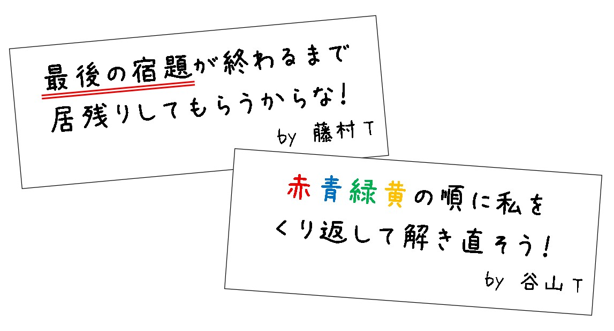

「おめでとう」
あなたがそうつぶやくと、突如、目の前が真っ白に輝いた。
あなたの体を優しく包み込むような眩い光。
いったい何が「おめでとう」なのかはイマイチよくわからないが…
それでもあなたは安心感に満ちていた。
「あぁ、これでようやく宿題のループから解放される…」
そう思った束の間、あなたは気を失ってしまった。
しばらくして…
あなたは気を失った後、また机に突っ伏して寝てしまったようだ。
そして、ふと机の上に置いてあった宿題に目を向けると…
何故か宿題が真っ白になっていた
「なんでだよ…」
あまりの衝撃的な事実に言葉を失った。
まだまだ宿題のループは終わっていない…
「そうだ、これは夢だ… きっと悪い夢を見ているだけなんだ…」
パニックになる自分を落ち着かせるように、頭の中でそう連呼するあなた。
悪い夢なら覚めてくれ…
そう思って机の上に置いてある宿題のそばを見てみると、２枚のメモがあった。

※2枚のメモを手掛かりに、今度こそ宿題を終わらせよう！